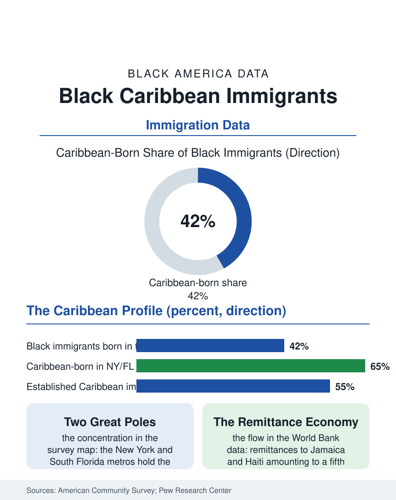

Black Census
The Caribbean Pillar: Black Immigrants from the Islands
Caribbean immigrants built pillar communities in New York and South Florida, with distinctive health care concentration, remittance economies, and homeownership drives. The Caribbean file.

More than a fifth of Black immigrants in the United States were born in the Caribbean, and for most of the modern immigration era the Caribbean was the largest single source region of Black America born abroad. Jamaicans, Haitians, Trinidadians, Guyanese, and Dominicans built some of the most distinctive Black communities in the country, in Brooklyn, in South Florida, in Boston and Toronto's American mirror, communities whose data profile differs from both the native-born and African immigrant populations on nearly every measure in this atlas. This article reads the Caribbean file.
The Communities the Census Sees
The American Community Survey counts on the order of two million Caribbean-born Black immigrants, with Jamaica and Haiti the largest origin countries by a wide margin, and their settlement is famously concentrated: the New York metropolitan area holds the largest Jamaican and Haitian populations outside the Caribbean itself, South Florida the second great Haitian center and a Jamaican hub of its own, with Boston, Atlanta, and Orlando as secondary poles. The profile the survey assembles is distinctive. Caribbean immigrants arrive with high rates of English proficiency relative to other immigrant streams, reflecting the anglophone Caribbean's school systems, though Haiti's French and Creole speakers face the language file's full weight inside a Black population often assumed fluent. Homeownership among established Caribbean immigrants runs above the native-born Black rate in several of the community studies, purchased through the rotating savings traditions, the partner and sou-sou systems, that formal finance has spent decades learning to recognize. Educational attainment splits the file: the anglophone Caribbean streams include both the region's professional classes, nurses above all, whose recruitment by American hospitals is a migration system of its own, and working-class service streams, so the Caribbean-born population shows wide internal dispersion on income and education alike.
Work, Remittances, and the Two-Home Economy
The occupational data place Caribbean immigrants with unusual density in health care: Haitian and Jamaican women form a measurable share of the nursing home, home health, and hospital workforces of the Northeast and Florida, a concentration built across decades of hospital recruiting, licensing pathways, and the community knowledge that care work is where the visas, the unions, and the steady hours are. The remittance economy is the file's signature institution. The World Bank's bilateral remittance data show Jamaica and Haiti receiving flows that amount to a fifth or more of their entire national output in recent years, sums that dwarf foreign aid and arrive household to household, funding school fees, houses built room by room across years of absence, and the barrels, the literal shipping barrels of goods, that anchor a material culture of care across distance. The two-home economy produces its demographic shadow in the census itself: the transnational family, children raised for stretches by grandparents in Kingston or Cap-Haitien while parents establish the American foothold, family reunification files that run years deep, and a second generation whose identity data in the surveys register the hyphen precisely, identifying as Jamaican-American or Haitian-American at rates the pan-Black categories of the census forms are only beginning to accommodate.
The Policy Weather
Immigration policy reaches this population through specific named channels, and the file reads them plainly. Haitian migration has been shaped by successive waves of humanitarian protection, temporary protected status designations renewed and contested across administrations, and parole programs whose expansions and contractions move the Florida numbers visibly in the annual data. The diversity and family preference systems carry the anglophone streams, where the sibling petition's decades-long queue is a standard feature of family planning in Brooklyn's Caribbean households. Naturalization rates among established Caribbean immigrants run high in the citizenship data, and with citizenship the political weight: Caribbean-American voters and officials form a recognized constituency in New York and Florida politics, and the community's churches, media, and carnival economies constitute civic infrastructure the city files record. The Caribbean file closes with the trend the origin data are writing: Africa has overtaken the Caribbean as the largest source region of new Black immigrants in recent arrival cohorts, shifting the center of the foreign-born Black story even as the Caribbean communities, now in their second and third American generations, consolidate into one of the permanent pillars of Black America. The census will keep counting birthplace. What it is really counting, in Flatbush and Little Haiti and Mattapan, is the oldest American story in a newer accent, arrival compounding into belonging.
More in Black Census
The Black Population of the United States: Size, Definitions, and Distribution
The Black population of the United States totals 52.8 million — 15.4 percent of the nation. How the Census Bureau defines and counts the population, and where it lives.
Black Median Household Income in the United States
Black median household income stands at $56,490 in the Census Bureau's annual income report — how the figure is measured, how it compares, and what drives it.
The Black Poverty Rate: Levels, Children, and the Long Trend
The official Black poverty rate is 17.1 percent — against 11.1 percent nationally and 7.7 percent for non-Hispanic White Americans. How poverty is measured and what the data show.
Source: U.S. Census Bureau, American Community Survey foreign-born data; Pew Research Center analyses of Black immigrant populations; World Bank remittance data.